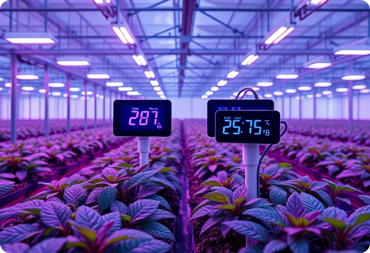
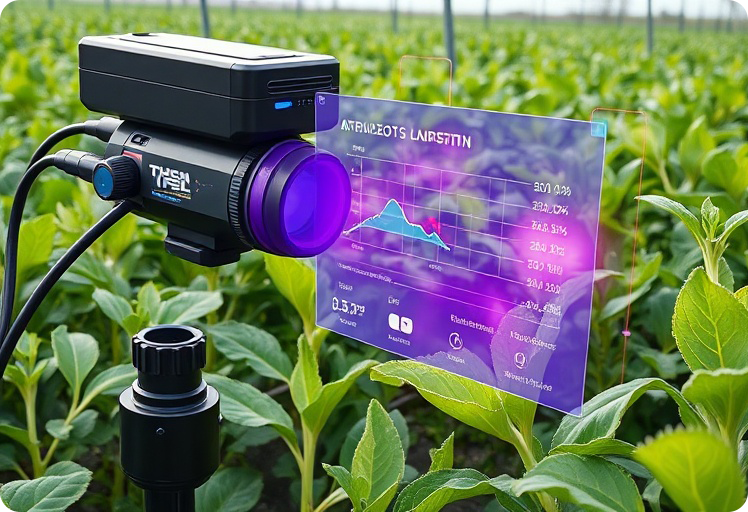
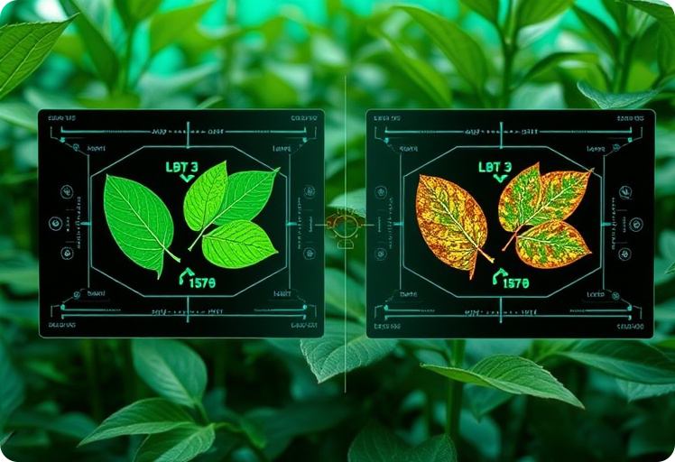
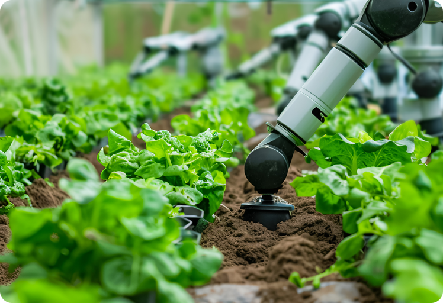
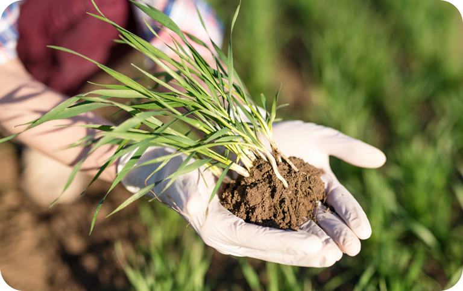
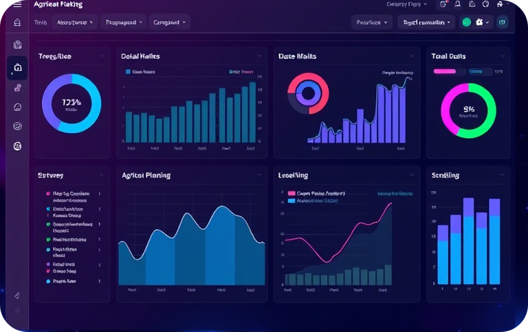

AI 기술로 농업을 최적화 하고 생산성을 극대화하세요
농업 현장의 실질적인 문제를 AI 기술로 해결합니다.
농업 종사자의 평균 연령이 계속 증가하고, 젊은 인력의 유입은 감소하고 있습니다. 이로 인해 농촌은 심각한 노동력 부족 문제를 겪고 있습니다.
AI가 제어하는 자동화 시스템(파종, 관수, 수확 로봇 등)을 통해 최소한의 인력으로도 24시간 효율적인 농장 운영이 가능해집니다.
예측하기 어려운 기후 변화와 병해충 증가로 안정적인 작물 수확이 어려워지고 품질 저하의 위험도 커지고 있습니다.
농장 내 센서가 수집하는 실시간 데이터를 AI가 분석합니다. 이를 통해 작물 성장에 가장 적합한 재배 환경을 조성하여 수확량을 극대화합니다.
인건비 상승은 물론, 에너지 비용과 각종 농자재 비용이 지속적으로 상승하면서 농가 경영의 부담이 날로 가중되고 있습니다.
AI의 정밀 제어를 통해 물, 에너지, 비료 등 꼭 필요한 자원만 사용하고 낭비를 최소화하여 환경 영향을 줄이는 지속가능한 농업을 실현합니다.
스마트팜 환경에서 AI가 작동하는 핵심 기능 영역입니다.

센서 데이터 기반 온도, 습도, 토양 상태 분석과 실시간 이상 탐지 제공

이미지 인식 및 성장 모델 기반 수확량 예측과 최적의 관수/비료 제안

카메라와 센서 데이터를 통한 조기 진단 및 맞춤형 방제 전략 추천

파종, 수확, 방제를 자동화하는 로봇 및 드론 연계 시스템
AI 스마트팜으로 얻을 수 있는 핵심 가치

AI 기반 데이터 분석으로 생산성을 최대 30% 증가
자동화와 효율적 관리로 인력 비용 절감

95%농업 데이터를 기반으로 전략적 의사결정 지원
환경 친화적 농업 실현과 자원 절약